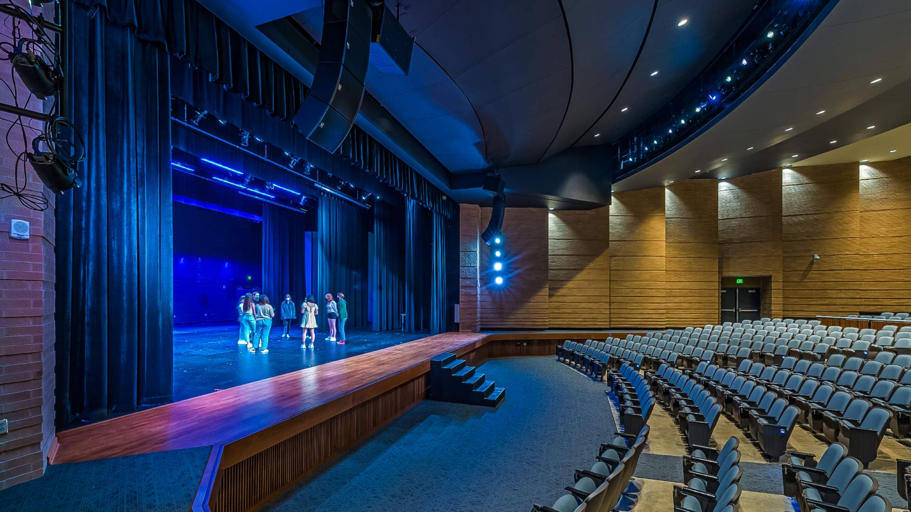
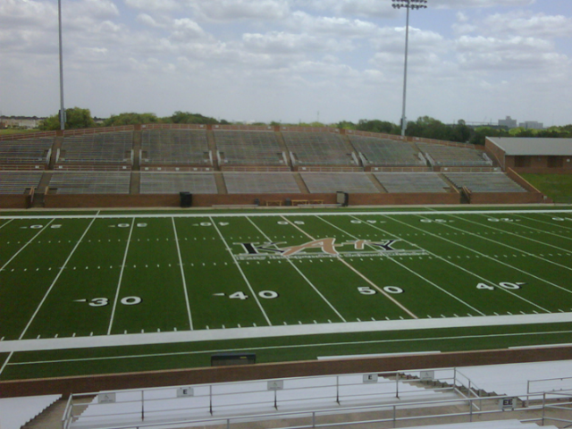
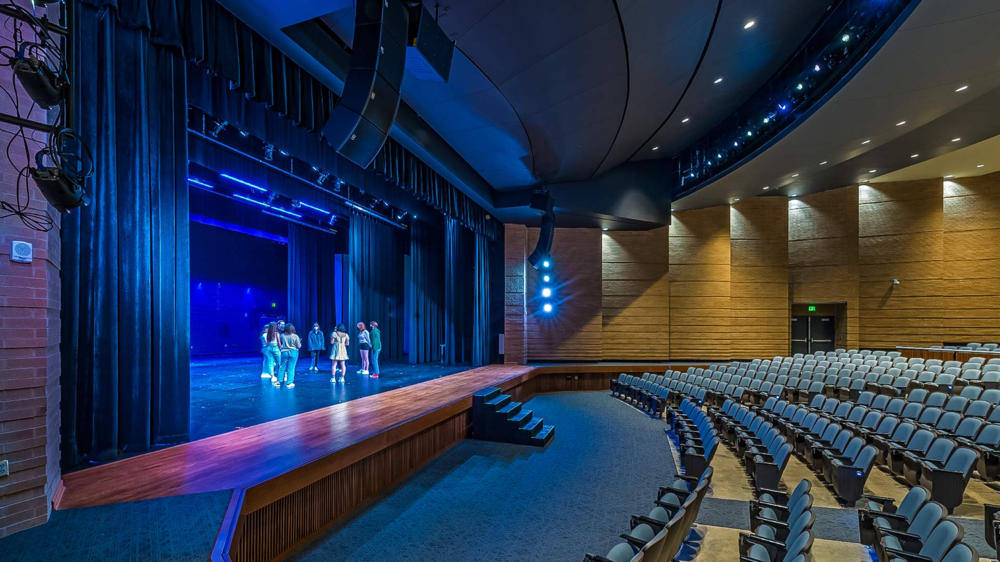
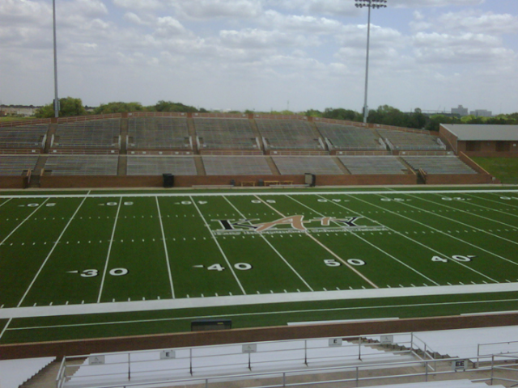

Jordan High School is a public senior high school located in Fulshear, Texas, and is part of the Katy Independent School District (KISD). It opened in fall 2020 to freshmen and sophomores, and the first graduating class was the Class of 2023.
At over 650,000 sq. ft with modern facilities and amenities, Jordan High School serves thousands of students in grades 9-12. The campus includes multiple gymnasiums, a performing arts center with seating for 900, an eight-lane natatorium, tennis courts, a football field, and baseball and softball stadiums — all designed to support academic, athletic, and artistic growth.
Named for the Jordan family, whose roots and contributions in the Katy community and school district go back generations, Jordan High School stands out for its strong academics, diverse student body, and achievements in extracurricular activities, including athletics and STEM competitions.
The school's colors are black and gold, and its mascot is the Warriors. Jordan students and teams are increasingly recognized across the state for excellence in both academic and competitive areas.

 


